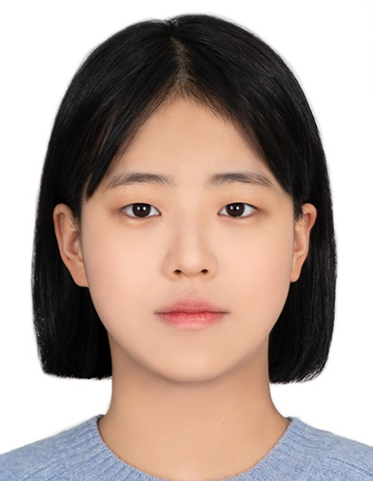
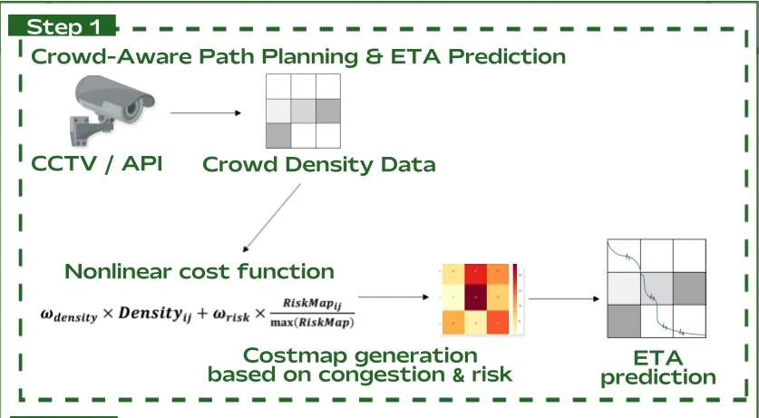
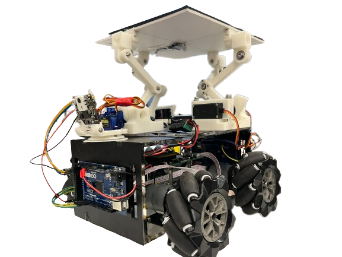

Minseong Bae
Hello. I am a first-year master's student in the Department of Applied Artificial Intelligence at Hanyang University.
My current research interests are Vision-Language-Action model finetuning and online reinforcement learning for embodied AI systems.

🎯 Current Focus
Studying Vision-Language-Action models, task-specific finetuning, and online RL for adaptive embodied agents.
🗞️ News
- Accepted to the Department of Applied Artificial Intelligence at Hanyang University.
📚 Publications & Presentations
-
Humanoids 2025
Crowd-Aware Path Planning and Visualization for Predictable Human Robot Interaction
Minseong Bae, Youngeun Choi, Youngseong Kim, Taeseong Ahn, Aron Lee, Junhwa Lee, Youngmoon Lee
This work presents crowd-aware navigation and visualization for predictable human-robot interaction, integrating real-time crowd density data into dynamic heatmaps for adaptive path planning.
-
ICROS 2025
공항 승객의 효율적인 이동 지원을 위한 자율주행 모빌리티 시스템
Autonomous Mobility System for Efficient Passenger Navigation in Airport Environments
Minseong Bae, Youngseong Kim, Taeseong Ahn, Aron Lee, Junhwa Lee, Youngeun Choi, Youngmoon Lee
Autonomous mobility system for supporting efficient passenger movement in airport environments, combining navigation, perception, and passenger-oriented route support.
🛠️ Projects
-

Autonomous Mobility
NUVI Autonomous Mobility
Autonomous mobility system for airport environments with crowd-aware path planning, ROS2 Nav2, RealSense D455 pointclouds, and web UI control.
Key features include crowd-aware costmap generation from time-dependent density data and ROS2 Nav2 integration with RealSense D455 pointcloud sensing.
-

Navigation
Crowd Data-Based Navigation and ETA Prediction
Congestion-aware route planning system that builds time-dependent costmaps from public crowd-density data and estimates arrival time dynamically.
Uses time-series crowd density ingestion, congestion-risk costmap generation, dynamic speed and distance-bias tuning, and sigmoid smoothing for stable ETA output.
-

Service Robot
Crash Lab: Hospital Guidance Robot
Hospital guide robot that combines GPT-3.5 Turbo based interaction with LiDAR mapping, AMCL localization, and ROS2 path planning.
Built natural language Q&A, text-to-speech responses, LiDAR-based mapping, and Dijkstra-based path planning for service robot interaction.
-
Vision and Manipulation
Tic-Tac-Toe Game Robot Arm
Educational robot arm project that recognizes O/X tokens with vision and places them on a board using robot control logic.
Demonstrates O/X recognition with PyTorch and OpenCV, game logic, real-time image capture, and precise robot arm control.
-

Robotics Design
Object Tracking and Balancing Robot
Four-mecanum-wheel robot that follows colored objects while maintaining plate balance using IMU feedback and PID-based motor control.
Combines color tracking, mecanum-wheel kinematics, PID motor control, and IMU-based horizontal stabilization.
👤 Profile
- Education BSc in Robotics, Hanyang University ERICA, 2022-2026
- Graduate Department of Artificial Intelligence Convergence, Hanyang University, 2026-Present
- Interests Autonomous robots, SLAM, path planning, ETA prediction
- Projects NUVI, capstone robotics, Crash Lab collaboration
💡 Skills
- Python
- C++
- ROS2
- OpenCV
✉️ Contact
I am open to robotics projects, research collaboration, and technical discussions. Please reach out by clicking the icons below.